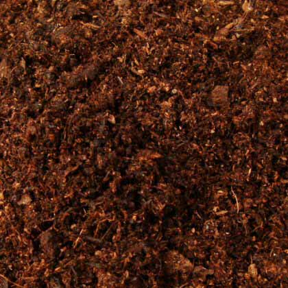
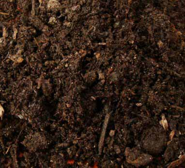
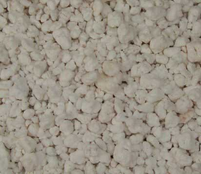

ممكن تستغرب من فكرة أننا كاتبين موضوع كامل خاص بالتربة, لكنها تُعد شيء مهم جدًا لأنها تُحافظ
على نوعيّة الحياة التي يعيشها
الفرد, و نوعيّة الهواء الذي يتنفّسه, و أيضًا مهمة جدّا للنباتات
معلومة : التربة تتكوّن من خمس مكونات اللي هي : المعادن, و المواد العضويّة,
و الكائنات الحيّة, و الغاز, و الماء .. و هذا الشيء يثبت مدى أهميّتها
طيب كيف ممكن تعرف إذا مزيج التربة هذا مناسب لنباتك؟
بشكل عام, معظم الناس يستخدمون السماد العضوي 100% أو السماد المنزلي للنباتات ..
و بعد فيه مواد
شائة الإستخدام تقدر تضيفها عشان تصنع مزيجك المثالي و راح نعرض بعض منها
|

×
|
|

×
|
|

×
|